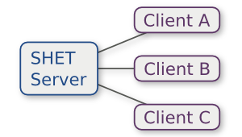

Introduction
This is the story of a group of
Computer Science undergraduates and our quest to avoid work at all
costs by building a home automation
system for their house. Its a tale of ridiculous hacks, novel
architectures and, above all, liberal use of blu-tack fun.
After meeting in our first year we decided we wanted to try and do something cool with our house. The resulting list of ideas was laughably ambitious, especially given that we couldn't really do anything to the building itself and that we also had to eat.
Two years and many hacks later and we have a remarkably feature-rich home automation system. We've got automated lights, media control, a washing machine that emails you, a recipe-browsing control panel, an electronic door-stop, a doop button and more! The whole thing is built on our own custom home automation system, 'SHET', and designed to be extremely hackable.
In The Beginning... (Motivation)
We started our grand plan listing off all manner of things we wanted our system to do. Apart from the slight concern of how we'd afford food after building this system, we also had to consider the wrath of the landlord. Whatever we built would have to be easily removed and not do (too much) damage to the house.

Our search for a house was a mixed affair. In the 3rd house with more mould than wallpaper, Tom was excited to discover one who's electricity meter had a light that flashed at a rate proportional to usage. Despite this critically important feature, we eventually decided to go somewhere else and landed up at 18 South Grove.
With our house found, we started thinking about what we wanted our home automation system to be like. Looking around the web we discovered that most systems were pretty bad. They generally were pretty clunky and seemingly designed for a bygone era or extremely limited and closed. We wanted something that was really flexible, hackable and actually nice to work with.
Seeing as we are all students, things were obviously going to have to be cheap. This ruled out a lot of options where specialist hardware was needed. Electronics knowledge (for all but Tom) was also in short supply which meant that the system would have to be electrically fairly simple. It also meant that high-voltage stuff was completely out of bounds.
SHET House Event Tunnelling (Designing the Software)
Our reaction to the problem of making the system hackable was a somewhat obvious one for any self-respecting *nix user:
"Shell scripts!" JonathanLuckily, sanity prevailed but the idea stuck. We decided that having a file system-like tree containing all the controllable things in our house was a cool way of doing things. For example,
/lounge/lights would control the lights in the lounge and
/jonathan/sound/speakers/volume would control the volume of
Jonathan's speakers.
With the idea of a 'file-system' full of real things, we set out to think about how this could work. We eventually settled with the idea that there would be three types of thing in the system:
- Properties: For example, 'light' or 'volume'. These are values that can be got and set.
- Events: For example, 'motion detected' or 'washing finished'. These are events that can be triggered by real-world or software events.
- Actions: For example, 'close door', 'pause' or 'is washing machine in use'. These are a bit like function calls and can optionally take arguments and return values.
Unfortunately, this model doesn't really fit into a real file system and so the idea of using a FUSE file system to literally 'mount' our house was quickly abandoned. Instead we settled on producing a command-line utility and API for accessing the system.
Since the system was going to be house-wide it was going to need to run across a network. After looking around for libraries and protocols we could use to implement our system we eventually decided to write our own. Event-based systems existed but they were either far too enterprisey or too complicated. We also looked at using a standard RPC library but these once again proved overly complicated and lacked a reasonable way dealing with events.
We decided on a centralised architecture with a single server and multiple clients. In our system the server would be pretty 'dumb' with all the application logic going on in the clients. The clients tell the server what nodes in the tree they contained and set/get properties, call actions or listen for events via the server that were created by other clients.
Speed wasn't an issue seeing as this would be running on a LAN and so we focused our efforts on making the protocol simple human readable. After wrangling with some RPC frameworks and seeing how much hassle data types were, we decided we didn't want to deal with type-safety and so using JSON to encapsulate values in the system seemed like a good idea. From there it was obvious to use JSON to encode messages in the protocol too. After a late night on IRC Tom and Jonathan settled on what became known as the SHET protocol.
Unfortunately, as you might have guessed, the name is actually a backronym. From the IRC logs of SHET's conception:
(23:55:38) Jonathan: name for the protocol ? (23:55:47) tomn: lol, no idea. (23:56:00) Jonathan: karls: ideas? (23:56:22) tomn: just string some buzwords together and acronym the hell out of it :p (23:57:10) Jonathan: :D (23:57:30) Jonathan: take a list of rude or amusing words and swap the vowels and then acronym the hell out of that